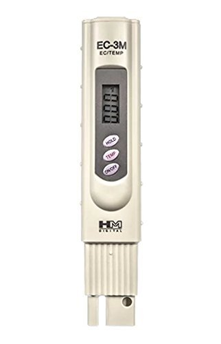
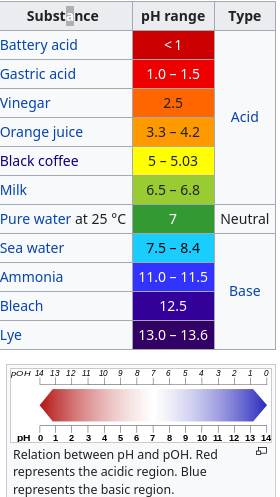
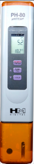

Mesures
Il y a quelques mesures à prendre pour s’assurer que l’environnement est adéquat. Les paramètres suivants sont inter-dépendants et la calibration des lectures est en fonction de la température.
EC
Calculé en milli-siemens/cm. Électro-conductivité. Il s’agit de mesurer la quantité de sels minéraux qui indiquent la teneur en substances nutritives. Idéalement ça joue entre 0.5 (eau pure) et 2.0, bonne concentration pour la floraison, par exemple.
{kind=link}
PH
Calculé en unités de 0 à 14. 7 est neutre. 0 est le plus acide, 14 le plus alcalin (ou basique). On cherche un Ph entre 5.8 et 6.2, selon la phase de croissance.
{kind=link}
Source: wikipedia
Pour lire le Ph de la solution ça prend soit du papier Ph, soit un lecteur. Les testeurs de piscine (par couleur) ne sont pas assez précis, le Ph est testable entre 8.2 et 6.8 seulement.
Des instruments plus précis sont en vente, mais ça peut beaucoup varier en qualité et complications.
{kind=link}
Le modèle PH-80 arrive avec l’instruction de mouiller les senseurs de l’instrument dans une solution tampon (storage solution) 15 minutes avant l’utilisation. L’instrument vient aussi avec une solution d’étalonnage à Ph 7.0. L’instrument s’étalonne tout seul à 7.0 en mode calibration. Ça va prendre un peu de KCl pour se fabriquer cette solution [1].
Température
Idéalement, on veut une température stable entre 20 et 25 °C. Quelques fournisseurs de solutions nutritives préviennent qu’il faut maintenir la température sous 22 °C.
TDS
Total Dissolved Solids. Ça aide à évaluer la qualité de l’eau du réservoir, et prévoir un recyclage au cas. Les sources varient en ce qui concerne le remplacement de l’eau. Pour le cannabis, en période critique comme la floraison, certains changent aux 7 jours. Il se peut que les systèmes soient confondus ici, système de marée v. irrigation par goutteurs.
Comme déjà mentionné, on peut évaluer indirectement la TDS avec l’EC et la temppérature. Sinon, ça prend un instrument de mesure, qui ressemble à celui pour l’EC.
Lumière
Un équipement qui produit une température spécifique en ° Kelvin (feuilles: 5000-7000 ° K, fruits et fleurs 3500 4500 ° K) ou une longueur d’onde adéquate (100 - 400 nm) et 3000 lumens (sources non corroborées).
Source : http://www.hydroplanete.com/guide-de-culture-pxl-18.html
Ajustement du Ph
Relevé de la dernière modification du Ph pour un bassin de 50 l. Le Ph était à 6.6. Pour obtenir 5.6 ça a pris 5 ml de solution Ph- (floraison 34% ? non indiqué sur la bouteille). Pour remonter à 5.8 ça a pris 1 ml de solution Ph+.